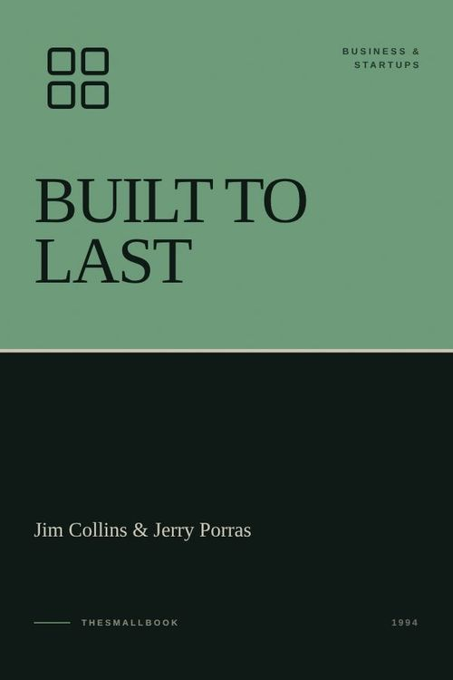

Library › Ask the Library › How do I build a company that lasts?
How do I build a company that lasts?
The short answer
Visionary companies are clock-builders: core ideology that never changes, BHAGs that stretch them, cult-like cultures, and evolution through experiments, profit is a means, not the mission.
The books behind the answer

Built to Last
Jim Collins & Jerry Porras · 1994 · 8 min · 6 lessons
Visionary companies are built on core ideology + BHAGs + cult-like culture - and clock-building, not time-telling.
- Clock-Building, Not Time-Telling: Build an organization that thrives without you, the clock, not the time-teller.
- Core Ideology: The Untouchable Identity: Values and purpose stay fixed for decades while everything else changes.
- BHAGs: Big Hairy Audacious Goals: Set goals so big they're slightly scary, they focus the whole organization for a decade.

Great by Choice
Jim Collins & Morten Hansen · 2011 · 8 min · 6 lessons
Great companies don't predict the future - they prepare for it: consistent marches, cheap bullets, and fanatic discipline.
- The 20 Mile March: Discipline Beats Talent: Consistent progress in good times AND bad, the hallmark of companies that survive chaos.
A failure that proves it
Why did Kodak fail?
2012 · BUSINESS · Loss: A 130-year empire
Kodak lasted 130 years and died in a decade, it had the ideology but lost the evolution. Never stop experimenting.
Your cash cow is someone else's target. Cannibalize yourself or be eaten - the choice is only ever WHO does it, never whether.
Why did Blockbuster fail?
2000 · BUSINESS · Loss: 9,000 stores → 1
Blockbuster had years and $50 million to buy Netflix, and wasted both. Clock-builders keep building.
If your profits come from customer pain, you've already written the invitation for your disruptor. What annoys your customers is someone else's business plan.
Questions people ask next
Can I read this in Hindi?
Yes. This answer is written in simple English. Open any linked book and choose Hindi or Hinglish to read the full lessons in your language, with audio where available.